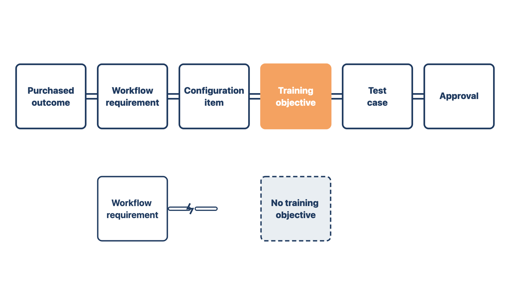
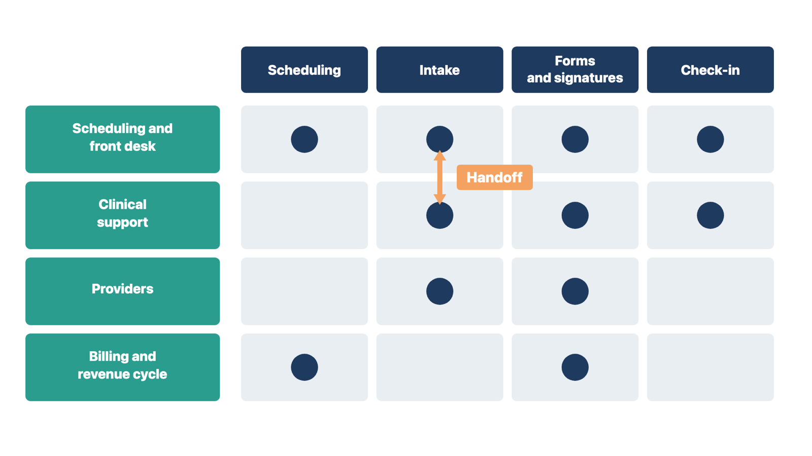
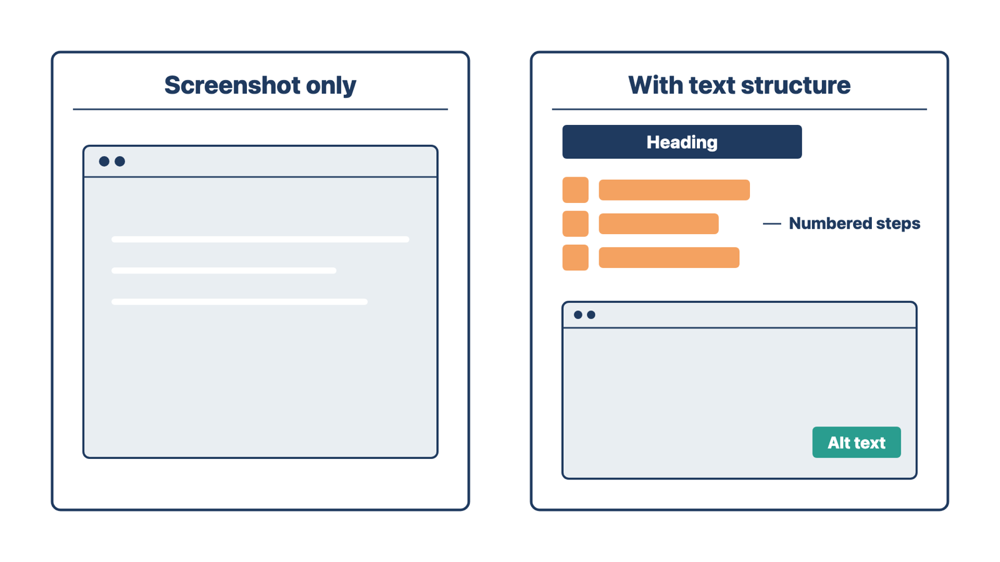

Training that is not tied to the approved build fails in two ways. Users reach go-live unable to do required work, or they spend class time on features no one approved.
Training is not a tour of the software. A tour answers, "What does this button do?" Implementation training answers a different question: "How does this role complete its work in the approved system, and what happens when the normal path fails?"
Build training from the traceability record you created in Module 4. That record links each purchased outcome to the work that delivers it:
purchased outcome → workflow requirement → configuration item → training objective → test case → approval

Rule: Every training objective traces to an approved requirement, and every approved requirement has a training objective.
Example A. A draft front-desk class at Cedar Point includes a 20-minute tour of the reporting menu. No front-desk requirement uses reports. You cut the tour.
Example B. An approved requirement says incomplete intake packets go to the review queue. No session teaches it. You add an objective and a practice scenario.
Both examples break the same chain. One has training with no requirement. The other has a requirement with no training.
Check yourself
One long class for everyone wastes time. It also teaches people screens they cannot use and skips the work they must do.
Group learners by the work they do and the access they will have. A role group is a set of users who share tasks and permissions. A clinic might use these role groups:
Some workflows cross roles. Train the handoff, the point where work passes from one role to another, from both sides. The scheduler should know what the clinical team needs. The receiver should know how to return incomplete work without losing it.
For each role group, list:

Rule: Group learners by the work they do and the access they will have.
Example A. At Cedar Point main, the scheduler books a new-patient visit. In the same session, she learns what the medical assistant needs before rooming. Example B. At Lakeshore, a biller learns how to send a claim question back to the front desk without deleting the visit. In both cases, each side learns its part of the same handoff.
Check yourself
At a small clinic, super users are the support on the floor on go-live day. They are also the first help desk afterward. If no one is chosen and trained early, the vendor's support team is spread too thin.
A super user is a clinic staff member who gets extra training early and helps peers in class and at go-live. A provider champion is a provider who speaks for the change with other providers and helps answer their questions.
Ask the client's sponsor to name a provider champion. Also ask for at least one super user for each role and location. Add more for large groups or extra shifts. Suggest people whom peers already trust and ask for help. Availability alone is a weak reason to choose someone.
Ask the clinic to protect each super user's hours. Someone must cover their usual work while they train and support others. This cover is called backfill. If the clinic has not named super users yet, raise it with the sponsor now. Record each name, role, location, shift, and protected hours on a super-user roster.
Train super users before the end-user sessions, on the same release. Check their competence the same way you check everyone else. Then add three skills:
Super users then help in later sessions and stand beside their peers at go-live. They follow the approved workflow. They do not approve clinical, privacy, or billing decisions.
Rule: The clinic chooses its super users; you train and check them before anyone else.
Example A. Cedar Point names its front-desk lead at main and its most experienced scheduler at Lakeshore. You train both a week before the front-desk sessions. They co-lead practice in those sessions.
Example B. Another clinic offers its newest hire because "she has time." You explain what makes a good super user and ask the practice manager to reconsider. The clinic still makes the choice.
In both cases, you help the clinic choose well, and you train the chosen people first.
Check yourself
A learner who cannot reach the training cannot show competence. The clinic also has a legal duty to accommodate employees with disabilities.
Adults arrive with different product experience, confidence, language, access needs, and job knowledge. Keep the competence standard the same. Change the route to it.
Useful methods include:
During planning, ask the client's training lead whether any learner needs an accommodation. An accommodation is a change in how a learner receives training or shows competence. Examples are a sign language interpreter or a large-print job aid.
Under federal guidance, the employer must provide reasonable accommodations so employees with disabilities can take part in training. That duty stays with the employer when an outside vendor teaches the class. So the client's human resources (HR) or accommodation owner decides what is provided. You make sure your materials and sessions can deliver it. Record the accommodation, not the reason. Do not ask for or keep a learner's diagnosis.
Some clients are public bodies, such as a county clinic. Ask its compliance lead which accessibility rules apply. A 2024 U.S. Department of Justice rule sets a standard for state and local government web content and apps. The standard is the Web Content Accessibility Guidelines (WCAG) 2.1, Level AA. An April 2026 rule moved the deadlines to April 26, 2027 for larger public bodies and April 26, 2028 for smaller ones. The client's compliance lead decides whether the rule covers your training content.
Check each job aid with the accessibility checker in your authoring tool before you send it.

Write job aids in plain language. Use short sentences, common words, and the active voice. Say who does what: "You select the reason," not "The reason is selected." Use one term for one thing across the class, the job aid, and the screen. Add a short glossary. Give extra practice time instead of faster explanations.
The client may ask for translated job aids. Controlled content, such as consent or privacy wording, needs its owner's approval. You may translate your own procedural steps if the client approves the approach. The competence check is the same in every language.
Rule: Change the route to competence for each learner; keep the standard the same.
Example A. A medical assistant who is hard of hearing gets corrected captions on the refill video. Example B. Night-shift staff get a repeat session at 7 a.m. Both learners pass the same competence check as everyone else.
Check yourself